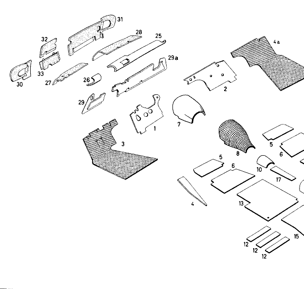

| № | Артикул | Название | Кол. | Примечание | Ограничение |
|---|---|---|---|---|---|
| 1 | A 101 806 82 07 04 | ANTISQUEAK | 1 | для PEDAL FLOOR, LEFT BITUMINOUS FELT CARDBOARD 5 MM THICK Рулевое управление: Влево | |
| 1 | A 101 806 80 03 08 | DRIVER'S FLOOR, LEFT | 1 | ||
| 2 | A 180 682 01 04 | ANTISQUEAK | 1 | для PEDAL FLOOR, RIGHT BITUMINOUS FELT CARDBOARD 5 MM THICK Рулевое управление: Влево | |
| 2 | A 101 806 80 04 08 | DRIVER'S FLOOR, RIGHT | 1 | ||
| 3 | A 101 806 82 05 01 | ANTISQUEAK | 1 | для DRIVER'S FLOOR, LEFT WAFFLE FELT, 10 MM THICK Рулевое управление: Влево | |
| 3 | A 000 990 17 42 | Диск | 4 | METAL WASHER для DRIVER'S FLOOR AT BODY FLOOR | |
| 4 | A 101 806 82 02 13 | ANTISQUEAK | 2 | MEMBER HALF для DRIVER'S FLOOR, LEFT AND RIGHT BITUMINOUS FELT CARDBOARD, 5 MM THICK | |
| 4 | A 000 988 22 80 | КНОПКА | 4 | для DRIVER'S FLOOR AT BODY FLOOR | |
| 4a | A 180 682 02 01 | ANTISQUEAK | 1 | для DRIVER'S FLOOR, RIGHT WAFFLE FELT, 10 MM THICK Рулевое управление: Влево | |
| 5 | A 101 206 82 01 01 | ANTISQUEAK FRONT | 2 | для DRIVER'S FLOOR, FRONT BITUMINOUS FELT CARDBOARD, 5 MM THICK | |
| 5 | A 136 984 02 52 | СТАКАН | 1 | для OIL FILLING, AUTOM. CLUTCH IN TRANSMISSION COVER PLATE с шасси 7504313 Автоматическая коробка переключения передач с шасси 7504313 | |
| 6 | A 101 206 82 02 01 | ANTISQUEAK, REAR | 2 | для DRIVER'S FLOOR, REAR BITUMINOUS FELT CARDBOARD, 5 MM THICK | |
| 7 | A 101 806 82 01 06 | ANTISQUEAK, TUNNEL, FRONT | 1 | для TRANSMISSION COVER PLATE, FRONT BITUMINOUS FELT CARDBOARD, 5 MM THICK | |
| 8 | A 101 806 82 01 13 | ANTISQUEAK, TUNNEL, FRONT | 1 | для TRANSMISSION COVER PLATE, FRONT WAFFLE FELT, 10 MM THICK | |
| 10 | A 101 806 82 00 07 | ANTISQUEAK, TUNNEL, FRONT | 1 | BEHIND TRANSMISSION COVER BITUMINOUS FELT CARDBOARD, 5 MM THICK | |
| 10 | A 101 206 84 05 13 | RUBBER MAT TUNNEL, FRONT | 1 | COVERING для TUNNEL, FRONT STATE COLOUR WHEN ORDERING с шасси 7504313 с шасси 7504313 | |
| 11 | A 101 206 82 00 05 | ANTISQUEAK, TUNNEL, REAR | 1 | для TUNNEL, REAR BITUMINOUS FELT CARDBOARD, 5 MM THICK | |
| 11 | A 101 806 84 09 02 | RUBBER MAT, LEFT | 1 | для DRIVER'S SEAT FLOOR STATE COLOUR WHEN ORDERING с шасси 7504313 Рулевое управление: ВлевоКоробка передач с шасси 7504313 | |
| 12 | A 101 206 82 01 02 | ANTISQUEAK, MAIN FLOOR | 6 | для CORRUGATION IN MAIN FLOOR, REAR "ADROPLAST" HEAT UP TO 80DEGREES C DEGREES BEFORE MOUNTING | |
| 12 | A 101 806 84 13 02 | RUBBER MAT, RIGHT | 1 | для DRIVER'S SEAT FLOOR STATE COLOUR WHEN ORDERING с шасси 8504275 Рулевое управление: ВлевоКоробка передач с шасси 8504275 | |
| 13 | A 101 206 82 00 08 | ANTISQUEAK, REAR, FLOOR | 2 | для REAR FLOOR BIT. FELT CARDBOARD, 3 MM THICK | |
| 13 | A 000 988 23 80 | КНОПКА | 3 | для RUBBER MAT AT PEDAL FLOOR | |
| 14 | A 101 206 82 02 09 | ANTISQUEAK, FLOOR, | 1 | UNDER REAR SEAT, RIGHT BITUMINOUS FELT CARDBOARD, 5 MM THICK | |
| 14 | A 101 206 84 02 06 | LINING | 1 | RUBBER MAT для CENTER TUNNEL BETWEEN DRIVER'S SEAT STATE COLOUR WHEN ORDERING | |
| 15 | A 101 206 82 00 09 | ANTISQUEAK, FLOOR, | 1 | UNDER REAR SEAT, LEFT BITUMINOUS FELT CARDBOARD, 5 MM THICK | |
| 15 | A 101 206 84 02 14 | RUBBER MAT | 1 | для REAR FLOOR STATE COLOUR WHEN ORDERING с шасси 7504313 с шасси 7504313 | |
| 16 | A 101 206 82 01 09 | ANTISQUEAK, FLOOR, | 2 | UNDER REAR SEAT BITUMINOUS FELT CARDBOARD, 5 MM THICK | |
| 16 | A 000 988 22 80 | КНОПКА | 4 | для RUBBER MAT AT FLOOR | |
| 17 | A 120 682 00 16 | ANTISQUEAK | 1 | для SEAT FRAME, CENTER "ADROPLAST" HEAT UP TO 80DEGREES C DEGREES BEFORE MOUNTING | |
| 20 | A 101 206 82 00 41 | ANTISQUEAK | 3 | для STIFFENING CORRUGATIONS IN LUGGAGE COMPARTMENT, REAR с шасси 7507561 с шасси 7507561 | |
| 20 | A 101 206 80 01 09 | COVERING | 1 | для SPARE WHEEL RECESS | |
| 21 | A 120 684 01 05 | COVERING | 1 | IN LUGGAGE COMPARTMENT, LEFT с шасси 8508425 с шасси 8508425 | |
| 22 | A 101 206 82 02 41 | ANTISQUEAK | 1 | для STIFFENING CORRUGATIONS IN LUGGAGE COMPARTMENT, REAR, LEFT с шасси 7507561 с шасси 7507561 | |
| 23 | A 120 684 00 04 | RUBBER MAT | 1 | IN LUGGAGE COMPARTMENT, CENTER PIECE с шасси 8508425 с шасси 8508425 | |
| 24 | A 000 988 17 80 | Кнопка | 6 | для RUBBER MAT AT REAR FLOOR до шасси 8506630 TO BORE FIXING HOLE AT FLOOR UP TO 7.5 MM до шасси 8506630 | |
| 25 | A 101 206 80 01 25 | ANTISQUEAK | 1 | для INSTRUMENT PANEL, TOP, RIGHT Рулевое управление: Влево | |
| 25 | A 101 206 86 09 80 | LINING | 1 | для ENTRANCE STATE COLOUR WHEN ORDERING с шасси 7504313 с шасси 7504313 | |
| 26 | A 101 206 80 02 25 | ANTISQUEAK | 1 | для INSTRUMENT PANEL, TOP, LEFT Рулевое управление: Влево | |
| 26 | A 101 206 86 10 80 | LINING | 1 | для ENTRANCE STATE COLOUR WHEN ORDERING с шасси 7504313 с шасси 7504313 | |
| 27 | A 101 206 80 11 28 | ANTISQUEAK | 1 | для GLOVE BOX с шасси 7508072 Рулевое управление: Влево с шасси 7508072 | |
| 28 | A 101 206 80 13 28 | ANTISQUEAK | 1 | для GLOVE BOX с шасси 7508072 Рулевое управление: Влево с шасси 7508072 | |
| 29 | A 120 680 01 25 | ANTIAQUEAK, LEFT | 1 | AT FRONT WALL, UPPER PART, UNDER INSTRUMENT PANEL SIMPLICITY OF SPARE PARTS Рулевое управление: Влево | |
| 29a | A 120 680 02 25 | ANTISQUEAK, RIGHT | 1 | AT FRONT WALL, UPPER PART, UNDER INSTRUMENT PANEL SIMPLICITY OF SPARE PARTS Рулевое управление: Влево | |
| 30 | A 101 206 80 19 29 | ANTISQUEAK, BODY | 1 | FRONT END, LEFT IN ENGINE SPACE Рулевое управление: Влево | |
| 31 | A 101 806 80 23 29 | ANTISQUEAK, COWL, RIGHT | 1 | FRONT END RIGHT IN ENGINE SPACE Рулевое управление: Влево | |
| 31 | A 101 866 87 00 37 | CUP | 2 | для PEDAL SEALING | |
| 32 | A 101 206 80 14 29 | ANTISQUEAK, BODY | 1 | FRONT END, CENTER, TOP IN ENGINE SPACE Рулевое управление: Влево | |
| 32 | A 000 987 18 40 | Резиновый буфер | 4 | для LOCKING HOLES IN COVER PLATE OF GLOVE BOX Рулевое управление: Влево | |
| 33 | A 101 806 80 21 29 | ANTISQUEAK, BODY | 1 | FRONT END, CENTER, BOTTOM IN ENGINE SPACE Рулевое управление: Влево | |
| 33 | A 000 987 03 44 | Запорная шайба | 3 | для SEALING IDLING CABLE AND STARTER CABLE OR TRIP RESET RESP.; 10.5MM | |
| 34 | A 000 987 04 15 | Пробка | 2 | для LOCKING HOLES NOT USED FOR MOUNTING ACCELERATOR PEDAL, CONTROL SHAFT Рулевое управление: Влево | |
| 34 | A 000 987 04 15 | Пробка | 10 | для LOCKING PASSAGES AT WHEEL ARCH, LEFT Коробка передач | |
| 36 | A 000 987 30 40 | РЕЗИНОВЫЙ УПОР | 1 | для CLOCK FOR LOCKING HOLE IN COVER PLATE OF GLOVE BOX | |
| 37 | A 000 987 17 44 | ДИСК | 1 | для LOCKING PASSAGE OF OPERATION ROD FOR FUEL REVERSING COCK | |
| 38 | A 000 987 19 44 | ДИСК | 2 | для LOCKING PASSAGE AT WHEEL ARCH, TOP, LEFT Коробка передач | |
| 40 | A 101 206 82 01 10 | ANTISQUEAK | 1 | для INTERMEDIATE WALL BEHIND REAR SEAT | |
| 40 | A 101 806 80 01 76 | PARTITION, LEFT | 1 | IN ENGINE SPACE Рулевое управление: Влево | |
| 41 | A 101 206 82 02 10 | ANTISQUEAK | 2 | JUTE FELT, 4 MM THICK | |
| 42 | A 101 206 82 00 51 | FELT STRIP | NB | JUTE FELT с PAPER FILLER | |
| 45 | A 101 806 80 02 76 | PARTITION, RIGHT | 1 | IN ENGINE SPACE Рулевое управление: Влево | |
| 46 | A 101 216 80 05 56 | PARTITION, RIGHT | 1 | BRACKET IN ENGINE SPACE Рулевое управление: Вправо | |
| 47 | A 128 680 00 56 | BRACKET UP | 1 | TO CHASSIS 8506199 BRACKET 10 180 687 00 16 HAS TO BE USED AND TO BE SCREWED TO PART 120 680 00 56. BORE PASSAGE HOLE TO Рулевое управление: Влево | |
| 54 | A 101 806 87 00 12 | ANGLE | 1 | ||
| 56 | A 120 993 16 10 | ПРУЖИНА | 1 | для PARTITION WALL AT FRONT WALL | |
| 57 | A 121 680 02 56 | BRACKET UP | 1 | TO CHASSIS 8506199 BRACKET 10 180 687 00 16 HAS TO BE USED AND TO BE SCREWED TO PART 121 680 02 56. BORE PASSAGE HOLE TO | |
| 65 | A 101 806 80 01 58 | BRACKET | 1 | для FUSE BOX Рулевое управление: Влево | |
| 69 | A 101 806 87 01 97 | GASKET | 2 | AT WHEEL ARCH PAN | |
| 70 | A 101 206 88 07 06 | COVERING | 1 | для FRONT WALL, LATERAL, BOTTOM STATE COLOUR WHEN ORDERING | |
| 71 | A 101 206 88 08 06 | COVERING | 1 | для FRONT WALL, LATERAL, BOTTOM STATE COLOUR WHEN ORDERING | |
| 72 | A 101 206 88 01 20 | FIXING RAIL, | 1 | FRONT, BOTTOM, LEFT для FRONT WALL COVERING STATE COLOUR WHEN ORDERING | |
| 73 | A 101 206 88 02 20 | FIXING RAIL, | 1 | FRONT, BOTTOM, RIGHT для FRONT WALL COVERING STATE COLOUR WHEN ORDERING | |
| 74 | A 101 206 80 21 83 | COVERING, LATERAL, LEFT | 1 | для INSTRUMENT PANEL, LATERAL, LEFT OPENING FOR OPERATION LEVER FOR HEATING AND VENTILATION Рулевое управление: Влево | |
| 75 | A 101 206 80 22 83 | COVERING, LATERAL, RIGHT | 1 | для INSTRUMENT PANEL, LETARAL, RIGHT OPENING FOR OPERATION LEVER FOR HEATING AND VENTILATION Рулевое управление: Влево | |
| 76 | A 000 994 04 45 | ПРЕДОХРАНИТЕЛЬ | 4 | OPTIONAL для COVERING AT PARTITION WALL, OUTSIDE | |
| 80 | A 120 680 01 83 | COVER | 1 | для GLOVE BOX Рулевое управление: Влево | |
| 81 | A 101 206 89 00 70 | - HANDLE | 1 | Рулевое управление: Влево | |
| 82 | A 101 206 80 01 84 | - SPRING-BALL LOCK | 1 | Рулевое управление: Влево | |
| 83 | A 101 206 80 03 87 | HINGE, LEFT | 1 | LINKS Рулевое управление: Влево | |
| 84 | A 101 206 80 04 87 | HINGE, RIGHT | 1 | RECHTS Рулевое управление: Влево | |
| 85 | A 101 206 80 05 98 | COVER | 1 | для GLOVE BOX Рулевое управление: Вправо | |
| 87 | A 121 366 99 01 70 | - HANDLE | 1 | Рулевое управление: Вправо | |
| 88 | A 101 206 80 05 87 | - HINGE, LEFT | 1 | LINKS Рулевое управление: Вправо | |
| 89 | A 101 206 80 06 87 | - HINGE, RIGHT | 1 | RECHTS Рулевое управление: Вправо | |
| 90 | A 000 994 04 45 | ПРЕДОХРАНИТЕЛЬ | 4 | OPTIONAL для GLOVE BOX COVER AT INSTRUMENT PANEL | |
| 91 | A 101 866 89 00 33 | GUIDE FORK | 2 | для GLOVE BOX COVER AT INSTRUMENT PANEL Рулевое управление: Вправо | |
| 92 | A 186 993 20 01 | ПРУЖИНА | 1 | для GLOVE BOX COVER AT INSTRUMENT PANEL Рулевое управление: Вправо | |
| 93 | A 101 206 89 00 41 | SUPPORT | 1 | для GLOVE BOX COVER Рулевое управление: Влево | |
| 95 | A 101 206 89 02 39 | COVER | 1 | для INSTRUMENT PANEL, CENTER | |
| 96 | A 101 058 17 00 14 | TYPE DESIGNATION | 1 | PLATE, INSIDE AT INSTRUMENT PANEL | |
| 97 | A 000 994 00 45 | Скоба | 2 | для TYPE DESIGNATION PLATE AT COVER | |
| 98 | A 101 206 80 03 11 | FIXING PLATE | 1 | для OPERATION BUTTONS Рулевое управление: Влево | |
| 99 | A 101 206 89 00 24 | - GLASS, PLEXIGLASS, | 1 | для CHARGING PILOT LAMP | |
| 110 | A 101 056 80 00 75 | COVER PLATE | 1 | для INSTRUMENT PANEL STATE COLOUR WHEN ORDERING | |
| 111 | A 101 206 89 01 71 | ORNAMENTAL BAR | 1 | для INSTRUMENT PANEL | |
| 112 | A 000 988 58 78 | CLIP | 6 | для ORNAMENTAL BAR AT INSTRUMENT PANEL | |
| 113 | A 000 988 47 78 | SPREADER CLIP | 4 | для ORNAMENTAL BAR AT INSTRUMENT PANEL | |
| 115 | A 101 206 90 00 22 | COVER PLATE | 1 | ABOVE COMPENSATOR IN LUGGAGE ROOM | |
| A 101 806 82 09 04 | ANTISQUEAK | 1 | для PEDAL FLOOR, LEFT BITUMINOUS FELT CARDBOARD 5 MM THICK Рулевое управление: Вправо | ||
| A 180 682 02 04 | ANTISQUEAK | 1 | для PEDAL FLOOR, RIGHT BITUMINOUS FELT CARDBOARD 5 MM THICK Рулевое управление: Вправо | ||
| A 101 806 82 06 04 | ANTISQUEAK | 1 | для PEDAL FLOOR, CENTER BITUMINOUS FELT CARDBOARD 5 MM THICK Рулевое управление: Вправо | ||
| A 101 806 82 07 01 | ANTISQUEAK | 1 | для DRIVER'S FLOOR, LEFT WAFFLE FELT, 10 MM THICK Рулевое управление: Вправо | ||
| A 180 682 04 01 | ANTISQUEAK | 1 | для DRIVER'S FLOOR, RIGHT WAFFLE FELT, 10 MM THICK Рулевое управление: Вправо | ||
| A 101 206 80 03 25 | ANTISQUEAK | 1 | для INSTRUMENT PANEL, TOP, RIGHT Рулевое управление: Вправо | ||
| A 101 206 80 04 25 | ANTISQUEAK | 1 | для INSTRUMENT PANEL, TOP, LEFT Рулевое управление: Вправо | ||
| A 101 206 80 01 28 | ANTISQUEAK, LEFT | 1 | для GLOVE BOX до шасси 7508071 Рулевое управление: Влево до шасси 7508071 | ||
| A 101 206 80 04 28 | ANTISQUEAK, LEFT | 1 | для GLOVE BOX до шасси 7508071 Рулевое управление: Вправо до шасси 7508071 | ||
| A 101 206 80 02 28 | ANTISQUEAK, RIGHT | 1 | для GLOVE BOX до шасси 7508071 Рулевое управление: Влево до шасси 7508071 | ||
| A 101 206 80 03 28 | ANTISQUEAK, RIGHT | 1 | для GLOVE BOX до шасси 7508071 Рулевое управление: Вправо до шасси 7508071 | ||
| A 101 206 80 14 28 | ANTISQUEAK | 1 | для GLOVE BOX с шасси 7508072 Рулевое управление: Вправо с шасси 7508072 | ||
| A 101 206 80 12 28 | ANTISQUEAK | 1 | для GLOVE BOX с шасси 7508072 Рулевое управление: Вправо с шасси 7508072 | ||
| A 000 985 12 62 | ШАЙБА | 1 | METAL WASHER для ANTISQUEAK AT FRONT WALL, UPPER PART | ||
| A 120 680 03 25 | ANTISQUEAK, LEFT | 1 | AT FRONT WALL, UPPER PART, UNDER INSTRUMENT PANEL SIMPLICITY OF SPARE PARTS Рулевое управление: Вправо | ||
| A 120 680 04 25 | ANTISQUEAK, RIGHT | 1 | AT FRONT WALL, UPPER PART, UNDER INSTRUMENT PANEL SIMPLICITY OF SPARE PARTS Рулевое управление: Вправо | ||
| A 101 806 80 24 29 | ANTISQUEAK, COWL, LEFT | 1 | FRONT END, LEFT IN ENGINE SPACE Рулевое управление: Вправо | ||
| A 000 985 12 62 | ШАЙБА | 1 | METAL WASHER для ANTISQUEAK AT BODY FRONT END, LEFT | ||
| A 101 206 80 18 29 | ANTISQUEAK, BODY | 1 | FRONT END, RIGHT IN ENGINE SPACE Рулевое управление: Вправо | ||
| A 000 985 12 62 | ШАЙБА | 5 | METAL WASHER для ANTISQUEAK AT BODY FRONT END, RIGHT | ||
| A 101 206 80 15 29 | ANTISQUEAK, BODY | 1 | FRONT END, CENTER, TOP IN ENGINE SPACE Рулевое управление: Вправо | ||
| A 101 806 80 22 29 | ANTISQUEAK, BODY | 1 | FRONT END, CENTER, BOTTOM IN ENGINE SPACE Рулевое управление: Вправо | ||
| A 000 985 12 62 | ШАЙБА | 5 | METAL WASHER для ANTISQUEAK AT BODY FRONT END, CENTER TOP AND CENTER BOTTOM | ||
| A 000 987 96 40 | РЕЗИНОВЫЙ УПОР | 7 | для LOCKING OF DRAIN HOLES AT SIDE MEMBER HALF AND CROSS MEMBER BOTTOM | ||
| A 000 987 92 40 | Резиновый буфер | 3 | для LOCKING OF DRAIN HOLES AT FLOOR REAR AND FORK MEMBER FRONT, BOTTOM | ||
| A 101 206 84 02 13 | RUBBER MAT | 1 | COVERING для TUNNEL, FRONT STATE COLOUR WHEN ORDERING до шасси 6500942 до шасси 6500942 | ||
| A 101 206 84 04 13 | RUBBER MAT | 1 | COVERING для TUNNEL, FRONT STATE COLOUR WHEN ORDERING с шасси 6500943\-7504312 с шасси 6500943\-7504312 | ||
| A 101 806 84 01 02 | RUBBER MAT, LEFT | 1 | для DRIVER'S SEAT FLOOR STATE COLOUR WHEN ORDERING до шасси 6500942 Рулевое управление: ВлевоКоробка передач до шасси 6500942 | ||
| A 101 806 84 02 02 | RUBBER MAT, RIGHT | 1 | для DRIVER'S SEAT FLOOR STATE COLOUR WHEN ORDERING до шасси 6500942 Рулевое управление: ВлевоКоробка передач до шасси 6500942 | ||
| A 101 806 84 03 02 | RUBBER MAT, LEFT | 1 | для DRIVER'S SEAT FLOOR STATE COLOUR WHEN ORDERING до шасси 6502735 Рулевое управление: ВправоКоробка передач до шасси 6502735 | ||
| A 101 806 84 04 02 | RUBBER MAT, RIGHT | 1 | для DRIVER'S SEAT FLOOR STATE COLOUR WHEN ORDERING до шасси 6502735 Рулевое управление: ВправоКоробка передач до шасси 6502735 | ||
| A 101 806 84 05 02 | RUBBER MAT, LEFT | 1 | для DRIVER'S SEAT FLOOR STATE COLOUR WHEN ORDERING с шасси 6500943\-7504312 Рулевое управление: ВлевоКоробка передач с шасси 6500943\-7504312 | ||
| A 101 806 84 07 02 | RUBBER MAT, RIGHT | 1 | для DRIVER'S SEAT FLOOR STATE COLOUR WHEN ORDERING с шасси 6500943\-7504312 Рулевое управление: ВлевоКоробка передач с шасси 6500943\-7504312 | ||
| A 101 806 84 06 02 | RUBBER MAT, LEFT | 1 | для DRIVER'S SEAT FLOOR STATE COLOUR WHEN ORDERING с шасси 6502736\-7504312 Рулевое управление: ВправоКоробка передач с шасси 6502736\-7504312 | ||
| A 101 806 84 08 02 | RUBBER MAT, RIGHT | 1 | для DRIVER'S SEAT FLOOR STATE COLOUR WHEN ORDERING с шасси 6502736\-7504312 Рулевое управление: ВправоКоробка передач с шасси 6502736\-7504312 | ||
| A 101 806 84 10 02 | RUBBER MAT, RIGHT | 1 | для DRIVER'S SEAT FLOOR STATE COLOUR WHEN ORDERING с шасси 7504313\-8504274 Рулевое управление: ВлевоКоробка передач с шасси 7504313\-8504274 | ||
| A 101 806 84 11 02 | RUBBER MAT, LEFT | 1 | для DRIVER'S SEAT FLOOR STATE COLOUR WHEN ORDERING с шасси 7504313 Рулевое управление: ВправоКоробка передач с шасси 7504313 | ||
| A 101 806 84 12 02 | RUBBER MAT, RIGHT | 1 | для DRIVER'S SEAT FLOOR STATE COLOUR WHEN ORDERING с шасси 7504313\-8504274 Рулевое управление: ВправоКоробка передач с шасси 7504313\-8504274 | ||
| A 101 806 84 14 02 | RUBBER MAT, RIGHT | 1 | для DRIVER'S SEAT FLOOR STATE COLOUR WHEN ORDERING с шасси 8504275 Рулевое управление: ВправоКоробка передач с шасси 8504275 | ||
| A 180 684 01 02 | RUBBER MAT, LEFT | 1 | для DRIVER'S SEAT FLOOR STATE COLOUR WHEN ORDERING Рулевое управление: ВлевоАвтоматическая коробка переключения передач | ||
| A 180 684 02 02 | RUBBER MAT, RIGHT | 1 | для DRIVER'S SEAT FLOOR STATE COLOUR WHEN ORDERING Рулевое управление: ВправоАвтоматическая коробка переключения передач | ||
| A 101 206 84 00 14 | RUBBER MAT | 1 | для REAR FLOOR STATE COLOUR WHEN ORDERING до шасси 6500942 до шасси 6500942 | ||
| A 101 206 84 01 14 | RUBBER MAT | 1 | для REAR FLOOR STATE COLOUR WHEN ORDERING с шасси 6500943 \- 7504312 с шасси 6500943 | ||
| A 101 206 84 01 05 | RUBBER MAT | 1 | IN LUGGAGE COMPARTMENT, LEFT до шасси 8508424 до шасси 8508424 | ||
| A 101 206 84 02 05 | RUBBER MATE | 1 | IN LUGGAGE COMPARTMENT, RIGHT EXPORT, SPECIAL REQUEST, для TIRES 6.40\-15 до шасси 8508424 до шасси 8508424 | ||
| A 120 684 02 05 | RUBBER MAT | 1 | IN LUGGAGE COMPARTMENT, RIGHT EXPORT, SPECIAL REQUEST, для TIRES 6.40\-15 с шасси 8508425 с шасси 8508425 | ||
| A 101 206 84 01 04 | RUBBER MAT | 1 | IN LUGGAGE COMPARTMENT, CENTER PIECE до шасси 8508424 до шасси 8508424 | ||
| A 101 206 86 05 80 | LINING, LEFT | 1 | для ENTRANCE STATE COLOUR WHEN ORDERING до шасси 6500942 до шасси 6500942 | ||
| A 101 206 86 06 80 | LINING, RIGHT | 1 | для ENTRANCE STATE COLOUR WHEN ORDERING до шасси 6500942 до шасси 6500942 | ||
| A 101 206 86 01 20 | ENTRANCE RAIL | 1 | для DRIVER'S DOOR до шасси 6500579 до шасси 6500579 | ||
| A 101 206 86 02 20 | ENTRANCE RAIL | 1 | для DRIVER'S DOOR до шасси 6500579 до шасси 6500579 | ||
| A 101 206 86 01 22 | ENTRANCE RAIL | 1 | для REAR DOOR до шасси 6500579 до шасси 6500579 | ||
| A 101 206 86 02 22 | ENTRANCE RAIL | 1 | для REAR DOOR до шасси 6500579 до шасси 6500579 | ||
| A 101 206 86 07 80 | LINING | 1 | для ENTRANCE STATE COLOUR WHEN ORDERING с шасси 6500943\-7504312 с шасси 6500943\-7504312 | ||
| A 101 206 86 08 80 | LINING | 1 | для ENTRANCE STATE COLOUR WHEN ORDERING с шасси 6500943\-7504312 с шасси 6500943\-7504312 | ||
| A 000 987 30 40 | РЕЗИНОВЫЙ УПОР | 2 | для LOCKING HOLES Коробка передач | ||
| A 000 987 01 44 | ДИСК | 2 | для LOCKING MOUNTING HOLES AT WHEEL ARCH до шасси 7504312 до шасси 7504312 | ||
| A 000 987 02 44 | Запорная шайба | 1 | для LOCKING HOLES IN COVER PLATE OF GLOVE BOX Рулевое управление: Влево | ||
| A 101 806 80 03 76 | PARTITION, LEFT | 1 | IN ENGINE SPACE Рулевое управление: Вправо | ||
| A 000 983 01 98 | - ПОРОЛОН | NB | AT PARTITION WALL, LEFT MOLTOPREN STATE MEASURING WHEN ORDERING | ||
| A 000 987 04 44 | ДИСК | 1 | AT BRACKET PARTITION WALL для ATE BOOSTER BRAKE Рулевое управление: Вправо | ||
| A 101 216 80 07 56 | BRACKET | 1 | IN ENGINE SPACE SPECIAL REQUEST ATE BOOSTER BRAKE Рулевое управление: Вправо | ||
| A 000 983 01 98 | - ПОРОЛОН | 1 | Рулевое управление: Влево | ||
| A 000 983 01 98 | - ПОРОЛОН | 2 | для PARTITION WALL, RIGHT Рулевое управление: Вправо | ||
| A 000 983 01 98 | - ПОРОЛОН | 1 | Рулевое управление: Вправо | ||
| A 000 983 01 98 | - ПОРОЛОН | 1 | |||
| A 000 983 01 98 | ПОРОЛОН | 1 | для BRACKET PARTITION WALL STATE MEASURING WHEN ORDERING Рулевое управление: Вправо | ||
| A 101 206 80 00 56 | BRACKET | 1 | SPECIAL REQUEST, ATE BOOSTER BRAKE Рулевое управление: Влево | ||
| A 000 983 01 98 | - ПОРОЛОН | NB | AT BRACKET, PARTITION WALL, CENTER MOLTOPREN STATE MEASURING WHEN ORDERING Рулевое управление: Влево | ||
| A 000 987 10 36 | - резиновый профиль | 1 | 40\-MM LONG ORDER BY THE METER Рулевое управление: Влево | ||
| A 000 987 10 36 | - резиновый профиль | 1 | 250\-MM LONG ORDER BY THE METER Рулевое управление: Влево | ||
| A 000 983 01 98 | - ПОРОЛОН | 1 | для BRACKET AT FUSE BOX MOLTOPREN STATE MEASURING WHEN ORDERING Рулевое управление: Влево | ||
| A 000 987 10 36 | - резиновый профиль | 1 | 230\-MM LONG ORDER BY THE METER Рулевое управление: Влево | ||
| A 000 983 01 98 | ПОРОЛОН | 1 | MOLTOPREN для BRACKET, ATE BOOSTER BRAKE AT PARTITION WALL, CENTER ORDER BY THE METER Рулевое управление: Влево | ||
| A 000 983 49 86 | - COVERING FRONT | 2 | PANEL, BOTTOM, RIGHT AND BOTTOM, LEFT PLASTIC FOIL с MOLTOPREN STATE COLOUR AND MEASURING WHEN ORDERING | ||
| A 000 983 49 86 | - COVERING FRONT | 2 | PANEL, TOP, RIGHT AND TOP, LEFT PLASTIC FOIL с MOLTOPREN STATE COLOUR AND MEASURING WHEN ORDERING | ||
| A 000 983 49 86 | - COVERING FRONT | 2 | PANEL, OVER AND UNDER COMBI\-INSTRUMENT PLASTIC FOIL с MOLTOPREN STATE COLOUR AND MEASURING WHEN ORDERING | ||
| A 000 983 49 86 | - COVERING FRONT | 1 | PANEL, CENTER COMBI\-INSTRUMENT PLASTIC FOIL с MOLTOPREN STATE COLOUR AND MEASURING WHEN ORDERING | ||
| A 101 206 80 18 83 | COVERING, LATERAL, LEFT | 1 | для INSTRUMENT PANEL, LATERAL, LEFT OPENING FOR OPERATION LEVER FOR HEATING AND VENTILATION Рулевое управление: Вправо | ||
| A 101 206 80 23 83 | COVERING, LATERAL, RIGHT | 1 | для INSTRUMENT PANEL, LETARAL, RIGHT OPENING FOR OPERATION LEVER FOR HEATING AND VENTILATION Рулевое управление: Вправо | ||
| A 000 994 16 45 | ПРЕДОХРАНИТЕЛЬ | 4 | OPTIONAL для COVERING AT PARTITION WALL, OUTSIDE | ||
| A 000 988 77 78 | СКОБА | 2 | для COVERING AT ANGULAR PLATE до шасси 7502837 до шасси 7502837 | ||
| A 120 991 02 07 | PIN | 2 | для COVERING AT ANGULAR PLATE до шасси 7502837 до шасси 7502837 | ||
| A 000 985 10 62 | - Диск | 2 | для HANDLE AT COVER Рулевое управление: Вправо | ||
| A 000 994 16 45 | ПРЕДОХРАНИТЕЛЬ | 4 | OPTIONAL для GLOVE BOX COVER AT INSTRUMENT PANEL | ||
| A 000 994 04 45 | ПРЕДОХРАНИТЕЛЬ | 4 | OPTIONAL для CENTER COVER AT PARTITION WALL | ||
| A 000 994 16 45 | ПРЕДОХРАНИТЕЛЬ | 4 | OPTIONAL для CENTER COVER AT PARTITION WALL | ||
| A 101 216 80 00 11 | FIXING PLATE | 1 | для OPERATION BUTTONS Рулевое управление: Вправо | ||
| A 000 984 11 55 | ШАЙБА | 3 | для FIXING PLATE AT COVER PLATE Рулевое управление: Вправо | ||
| A 000 994 13 45 | предохранитель | 3 | для FIXING PLATE AT COVER PLATE | ||
| A 000 985 09 62 | Диск | 2 | METAL WASHER для COVER PLATE AT COVER PLATE OF GLOVE BOX | ||
| A 000 987 10 36 | - резиновый профиль | NB | 30\-MM LONG ORDER BY THE METER | ||
| A 000 987 92 40 | Резиновый буфер | 1 | для LOCKING OF DISCHARGING HOLE IN COVER PLATE, LUGGAGE COMPARTMENT с шасси 9503030\-9503980 с шасси 9503030\-9503980 |
Позиций: 190 · подписано на схемах: 97 · колесо — плавный зум в курсор, перетаскивание — пан, двойной клик — зум, клик по артикулу — скопировать.